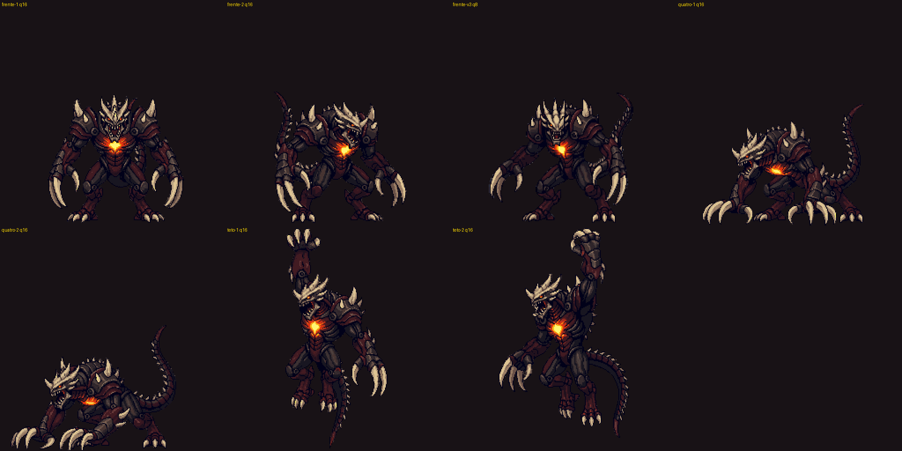

Os quadros do meio das transições escolhidas

24/11. As poses de frente, de quatro e pendurada, tiradas da E-7-1 pela animação, que é o caminho que guarda o traço (a rotação alisa). Cada uma partiu da E-7-1 em 256², com folga no quadro: duas tentativas no PixMiniMax e, na de frente, uma terceira na animação v3, a que segurou o giro em setembro. Custo: 20 gerações.
Começam na E-7-1 e terminam na pose nova, que fica parada no fim.


| Pose | Tentativa | O que saiu |
|---|---|---|
| De frente o surgimento, o urro, a sede e o coração | frente-1 | Fica de frente, simétrica, com os braços abertos e as garras para baixo. O core aparece inteiro, e o rabo some atrás do corpo. O giro é contínuo e ela é a mesma do começo ao fim. |
| frente-v3 | Para em três quartos, quase de frente, com o rabo à mostra. Fica de frente para a nave, como a pose do surgimento de setembro. Custou 8 gerações. | |
| frente-2 | Passa do ponto e termina virada para a direita. | |
| De quatro o galope, o rastejar e a escalada | quatro-1 | Cai de quatro com a cabeça erguida e o core à mostra, as garras no chão e o rabo para cima. |
| quatro-2 | Fica mais rente ao chão, com a cabeça baixa e o core quase escondido. | |
| Pendurada o teto | teto-1 | Fica pendurada pelo braço erguido, com as garras abertas no alto, que é onde fica a linha do teto. O corpo, as pernas e o rabo caem soltos. |
| teto-2 | A mão de cima vira um punho fechado e perde as garras, o mesmo defeito de hoje à tarde. |
Aprovado em 24/11: de frente, a frente-v3 (o três quartos, que encara a nave); de quatro, a quatro-2 (o core mais contido, mas à mostra; a garra de lado da quatro-1 contaminaria o galope); pendurada, as duas. A teto-1 se pendura por uma mão e a teto-2 pela outra, então cada uma tem o seu ataque de lava com a mão livre, e a troca entre elas é o andar pelo teto, alternando as garras que cravam.
De quebra, as transições já são clipes. A frente-1 de trás para a frente é a volta do surgimento para a pose da luta. A quatro-1 é o cair de quatro antes do galope. A teto-1 é o salto que agarra o teto. No passo 3 elas entram na comparação com os clipes de hoje, como os outros.